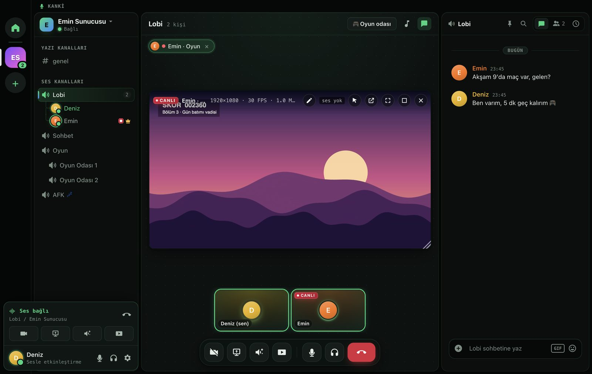
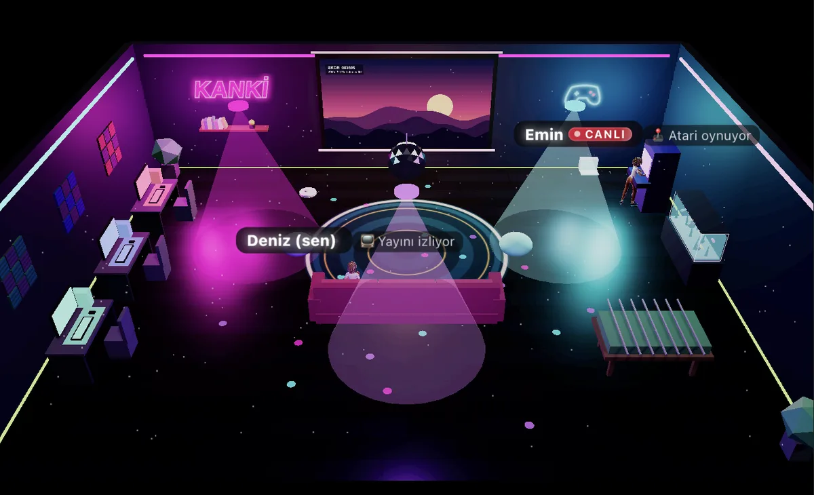
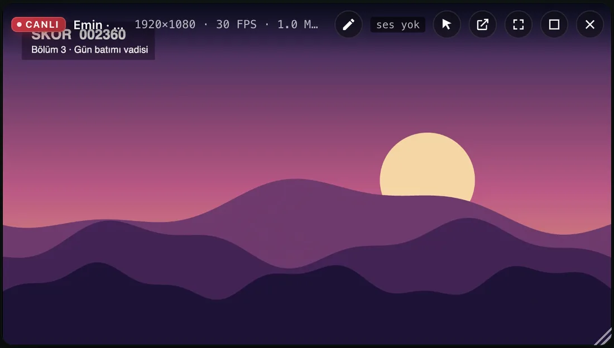
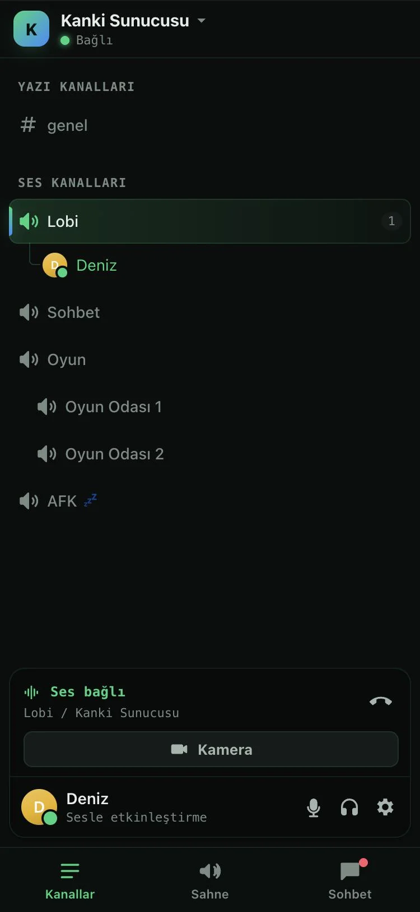

Arkadaşlarınla konuş,
oyna, takıl.
Kanki; kanal kanal sesli sohbet, 4K 60 FPS ekran paylaşımı, müzik botu ve 3D oyun odası olan, sadece bizim ekip için yapılmış bir uygulama.


İhtiyacımız olan her şey, tek yerde.
Reklam yok, hesap açmak yok, abonelik yok. Uygulamayı kur, adresi yaz, konuşmaya başla.

Oyununu net ve akıcı yayınla
Tüm ekranı ya da tek bir pencereyi paylaş; arkadaşların tek tıkla izlesin.
- 4K'ya kadar, 60 FPS ve oyunun sesiyle birlikte
- Oyun için akıcılık, yazı ve kod için netlik önceliği
- Yayının üstüne çiz ve ping at, herkes aynı anda görsün
- Ayrı pencerede ya da tam ekranda izle
Kanalı bir oyun odasına çevir
Kişi kartları yerine herkesin karakter olarak dolaştığı 3D bir oda. Konuşan, oyun oynayan, boşta olan; hepsi odada görünür.
- Kıyafetli karakterler, profil fotoğrafın tişörtünde, 👕 ile karakterini seç
- Yere tıkla yürü; koltuğa, atariye, langırta git; 👋 el salla, 💃 dans et
- İzlenen yayın odadaki TV'de oynar
- Herkes aynı sahneyi görür
Kanala müzik aç, herkes aynı anda dinlesin
Müzik panelinden ya da sohbetten şarkı ekle; bot kanala katılır ve çalar.
- Kuyruk, geç, duraklat, karıştır, tekrarla
- Sohbetten komutla:
!çal,!geç,!kuyruk - Radyolar: Türkiye'nin ve dünyanın en çok dinlenenleri, arama ile

Bilgisayar başında değilsen bile kanaldasın
Sunucu adresini telefonunun tarayıcısında aç; kurulum yok. Konuş, dinle, sohbete yaz.
- Ana ekrana ekle, uygulama gibi tek dokunuşla açılsın
- Hafif: ilk açılış ~0,2 MB, sonrası neredeyse hiç veri harcamaz
- iPhone ve Android tarayıcılarında çalışır
Küçük şeyler, büyük fark
Gürültü engelleme
Yapay zekâ destekli gürültü engelleme, yankı önleme ve bas-konuş tuşu.
Doğrudan dosya
Dosyayı sunucuya yüklemeden doğrudan arkadaşına gönder; boyut sınırı yok.
Resim ve GIF
Resmi yapıştır ya da sürükle bırak, GIF ara, bağlantı önizlemelerini gör.
Anket ve oylama
Akşam ne oynanacağına kanalda anketle karar verin.
İsim stilleri
Adını yazı tipi, renk geçişi ve efektlerle süsle.
Sabitleme ve arama
Önemli mesajı sabitle, eski mesajları ara.
Kamera
İstersen kameranı aç, kanaldakiler görsün.
Otomatik AFK
Uzun süre hareketsiz ve sessiz kalan AFK kanalına geçer; yayın izleyen taşınmaz.
Bilgisayarına uygun sürümü seç
Windows için kurulumlu sürümü öneriyoruz: bir kere kurarsın, yeni sürümler çıktıkça kendiliğinden güncellenir.
Adım adım kurulum
Uygulama imzalı değil (imza sertifikası ücretli). Bu yüzden ilk açılışta Windows ya da macOS bir uyarı gösterir. Aşağıdaki adımlarla bir kere geçmen yeterli.
-
Kanki-Setup.exe dosyasını indir
Yukarıdaki Windows için indir düğmesine bas ve inen dosyaya çift tıkla.
Tarayıcı indirmeyi engellerse indirmeler listesinde dosyanın yanındaki ⋯ menüsünden Sakla / Koru seçeneğini seç. -
"Windows bilgisayarınızı korudu" uyarısını geç
Mavi bir SmartScreen penceresi çıkarsa önce Ek bilgi yazısına, ardından Yine de çalıştır düğmesine tıkla. Bu uyarı sadece ilk kurulumda çıkar.
-
Kurulumu tamamla
Kurulum yerini istersen değiştir, Yükle ve ardından Son. Kanki masaüstüne ve Başlat menüsüne eklenir, yönetici izni istemez.
-
İzinleri ver
İlk açılışta Windows Güvenlik Duvarı izin isterse Özel ağlar kutusu işaretliyken Erişime izin ver de. Mikrofon izni sorulursa onayla.
-
Mac'ine uygun .dmg dosyasını indir
M1–M4 işlemcili Mac'ler için Kanki-mac-arm64.dmg, Intel Mac'ler için Kanki-mac-x64.dmg.
-
Uygulamalar klasörüne sürükle
.dmg dosyasını aç, açılan pencerede Kanki simgesini Applications (Uygulamalar) klasörüne sürükle.
-
İlk kez aç
Uygulamalar klasöründe Kanki'ye sağ tıkla → Aç → çıkan uyarıda tekrar Aç.
macOS 15 (Sequoia) ve sonrasında "Aç" seçeneği çıkmazsa: Sistem Ayarları → Gizlilik ve Güvenlik sayfasının altındaki Yine de Aç düğmesine bas. -
"Kanki hasarlı" uyarısı çıkarsa
Uygulama bozuk değil; macOS internetten inen imzasız uygulamaları böyle işaretliyor. Terminal'i aç (Spotlight'ta "Terminal" yaz), şu komutu yapıştırıp Enter'a bas, sonra Kanki'yi tekrar aç:
xattr -cr /Applications/Kanki.app -
İzinleri ver
Mikrofon: İlk bağlantıda sorulur, İzin Ver de.
Ekran Kaydı (ekran paylaşacaksan): Sistem Ayarları → Gizlilik ve Güvenlik → Ekran ve Sistem Sesi Kaydı bölümünde Kanki'yi aç. Ardından Kanki'yi tamamen kapatıp (⌘ Q) yeniden başlat.
Erişilebilirlik (isteğe bağlı): Bas-konuş tuşunun oyun içindeyken de çalışması için gerekir; Kanki ayarlarından tuş atarken istenir.
Bağlan, konuş, paylaş
Sunucu adresini ve varsa şifreyi Emin'den alacaksın. Adres şuna benzer: bizim-kanki.ngrok-free.app
Sunucuya bağlan
- Takma ad alanına arkadaşlarının seni tanıyacağı adı yaz.
- Sunucu adresi alanına Emin'in verdiği adresi yaz. Başına
https://eklemene gerek yok. - Şifre varsa yaz ve Bağlan'a bas.
- Bir kanala geçmek için adına çift tıkla. Konuştuğunda simgenin etrafında yeşil halka yanar.
Ekran paylaş ve izle
- Sağ üstteki Ekran Paylaş düğmesine bas.
- Bir ekran ya da pencere seç. Oyun için "Akıcılık", yazı/kod için "Netlik" önceliğini seç.
- Oyun sesini de duyurmak için Sistem sesini de paylaş işaretli kalsın, sonra Yayına Başla.
- Birinin yayınını izlemek için adının yanındaki CANLI rozetine tıkla. F ile tam ekran.
Takıldığın bir yer mi var?
Ücretli mi, hesap açmam gerekiyor mu?
Hayır. Kanki tamamen ücretsiz; hesap, e-posta ya da kayıt istemiyor. Sadece bir takma ad yazıyorsun.
Neden "tanınmayan uygulama" ya da "hasarlı" uyarısı çıkıyor?
Uygulamayı imzalamak için Apple ve Microsoft'tan yıllık ücretli sertifika almak gerekiyor; Kanki imzasız. Kurulum bölümündeki adımlarla uyarıyı bir kere geçmen yeterli.
Bağlanamıyorum, "Sunucuya ulaşılamadı" diyor.
Adresi doğru yazdığından emin ol (boşluk olmasın). Sunucu Emin'in bilgisayarında çalıştığı için onun Kanki'sinin açık olması gerekir; ona sor. Şifre hatası alıyorsan şifreyi tekrar iste.
Sesim gitmiyor ya da arkadaşlarımı duymuyorum.
Sol alttaki mikrofon ve kulaklık simgelerinin kırmızı olmadığını kontrol et. Ayarlar (dişli) → doğru mikrofon ve hoparlörü seç. "Sesle etkinleştirme" modundaysan algılama eşiğini düşür: konuşurken çubuk beyaz çizgiyi geçmeli.
Mac'te ekran paylaşınca siyah ekran görünüyor.
Ekran Kaydı izni eksik. Sistem Ayarları → Gizlilik ve Güvenlik → Ekran ve Sistem Sesi Kaydı'nda Kanki'yi aç, ardından Kanki'yi ⌘ Q ile kapatıp yeniden başlat.
Ekran paylaşırken oyunun sesi gitmiyor.
Windows'ta "Sistem sesini de paylaş" işaretliyse doğrudan çalışır. Mac'te sistem sesi için macOS 14.2 veya üstü gerekiyor; daha eski sürümlerde yayın sadece görüntüyle başlar.
Yayın takılıyor ya da bulanık.
Görüntü yayıncının internetinden her izleyiciye ayrı gider. Yayıncıysan paylaşım penceresinde çözünürlüğü 1080p'ye ya da kare hızını 30 FPS'e düşürmeyi dene. İzlerken sağ üstte gelen çözünürlük ve hız yazar.
Telefondan ya da Linux'tan kullanabilir miyim?
Evet, tarayıcıdan. Sunucu adresini telefonunun ya da bilgisayarının tarayıcısında aç (sunucuyu açan kişinin ayarlardan "Tarayıcıdan ve telefondan katılma"yı açmış olması gerekir). Konuşabilir, dinleyebilir, yazabilirsin. Telefonda ekran paylaşımı ve oyun odası yok; iPhone'da ekran kilitlenince ses kesilebilir. Uygulama gibi kullanmak için tarayıcı menüsünden Ana Ekrana Ekle.
Kanala gel, seni bekliyoruz.
Kur, adresi yaz, konuşmaya başla. İki dakika sürer.